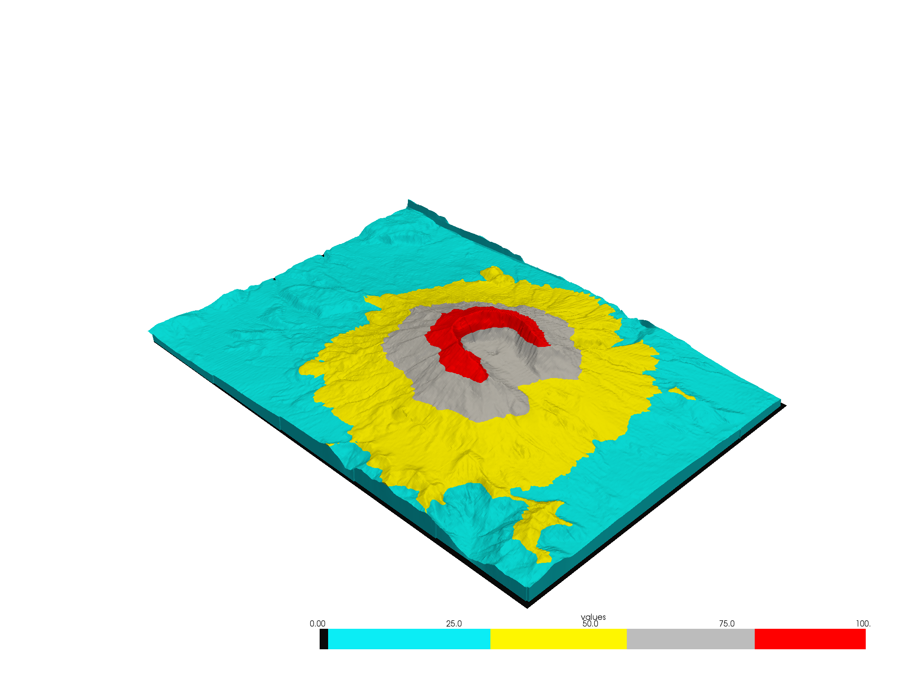
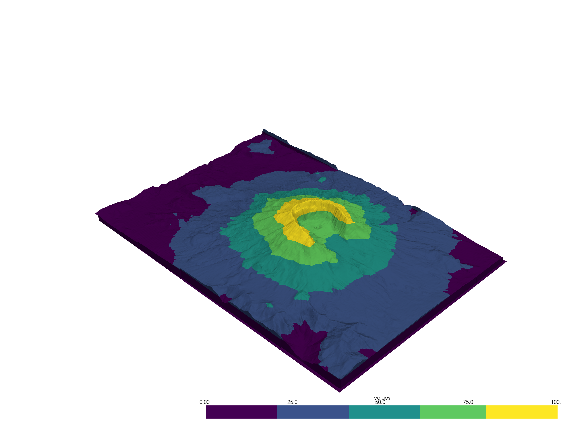
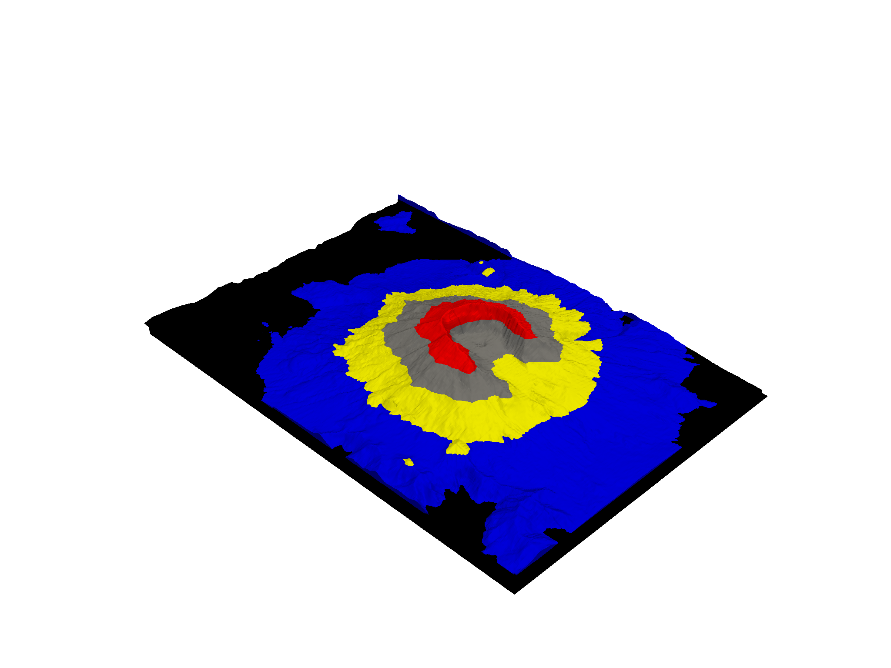
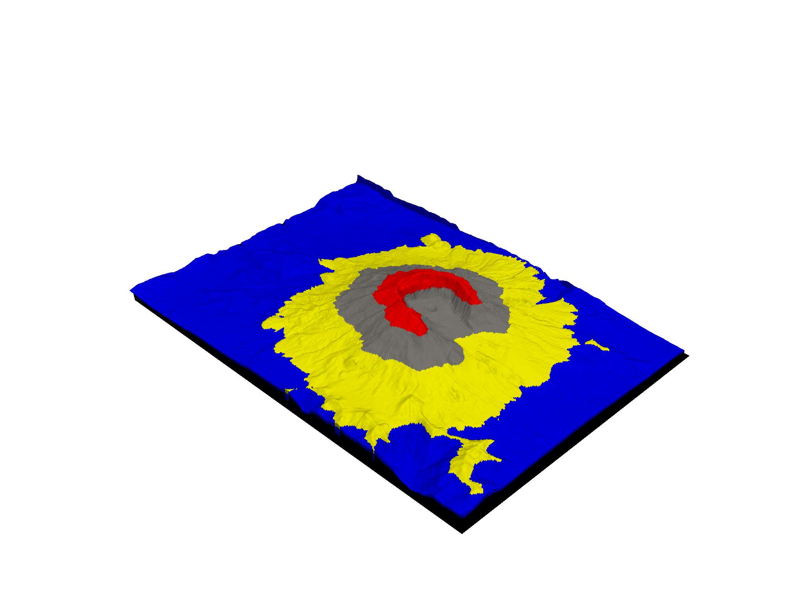
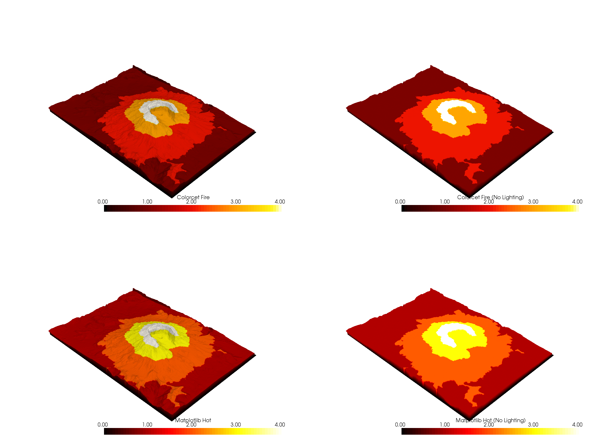

Note
Click here to download the full example code
Colormap Choices¶
Use a Matplotlib, Colorcet, cmocean, or custom colormap when plotting scalar values.
from pyvista import examples
import pyvista as pv
import matplotlib.pyplot as plt
from matplotlib.colors import ListedColormap
import numpy as np
Any colormap built for matplotlib, colorcet, or cmocean is fully
compatible with PyVista. Colormaps are typically specified by passing the
string name of the colormap to the plotting routine via the cmap
argument.
See Matplotlib’s complete list of available colormaps, Colorcet’s complete list, and cmocean’s complete list.
Custom Made Colormaps¶
To get started using a custom colormap, download some data with scalar values to plot.
mesh = examples.download_st_helens().warp_by_scalar()
# Add scalar array with range (0, 100) that correlates with elevation
mesh['values'] = pv.plotting.normalize(mesh['Elevation']) * 100
Build a custom colormap - here we make a colormap with 5 discrete colors and we specify the ranges where those colors fall:
# Define the colors we want to use
blue = np.array([12/256, 238/256, 246/256, 1])
black = np.array([11/256, 11/256, 11/256, 1])
grey = np.array([189/256, 189/256, 189/256, 1])
yellow = np.array([255/256, 247/256, 0/256, 1])
red = np.array([1, 0, 0, 1])
mapping = np.linspace(mesh['values'].min(), mesh['values'].max(), 256)
newcolors = np.empty((256, 4))
newcolors[mapping >= 80] = red
newcolors[mapping < 80] = grey
newcolors[mapping < 55] = yellow
newcolors[mapping < 30] = blue
newcolors[mapping < 1] = black
# Make the colormap from the listed colors
my_colormap = ListedColormap(newcolors)
Simply pass the colormap to the plotting routine!
mesh.plot(scalars='values', cmap=my_colormap)

Out:
[(581977.3046422418, 5134123.804642241, 21436.804642241805),
(562835.0, 5114981.5, 2294.5),
(0.0, 0.0, 1.0)]
Or you could make a simple colormap… any Matplotlib colormap can be passed to PyVista!
boring_cmap = plt.cm.get_cmap("viridis", 5)
mesh.plot(scalars='values', cmap=boring_cmap)

Out:
[(581977.3046422418, 5134123.804642241, 21436.804642241805),
(562835.0, 5114981.5, 2294.5),
(0.0, 0.0, 1.0)]
You can also pass a list of color strings to the color map. This approach divides up the colormap into 5 equal parts.
mesh.plot(scalars=mesh['values'], cmap=['black', 'blue', 'yellow', 'grey', 'red'])

Out:
[(581977.3046422418, 5134123.804642241, 21436.804642241805),
(562835.0, 5114981.5, 2294.5),
(0.0, 0.0, 1.0)]
If you still wish to have control of the separation of values, you can do this by creating a scalar array and passing that to the plotter along with the the colormap
scalars = np.empty(mesh.n_points)
scalars[mesh['values'] >= 80] = 4 # red
scalars[mesh['values'] < 80] = 3 # grey
scalars[mesh['values'] < 55] = 2 # yellow
scalars[mesh['values'] < 30] = 1 # blue
scalars[mesh['values'] < 1] = 0 # black
mesh.plot(scalars=scalars, cmap=['black', 'blue', 'yellow', 'grey', 'red'])

Out:
[(581977.3046422418, 5134123.804642241, 21436.804642241805),
(562835.0, 5114981.5, 2294.5),
(0.0, 0.0, 1.0)]
Matplotlib vs. Colorcet¶
Let’s compare Colorcet’s perceptually uniform “fire” colormap to Matplotlib’s “hot” colormap much like the example on the first page of Colorcet’s docs.
The “hot” version washes out detail at the high end, as if the image is overexposed, while “fire” makes detail visible throughout the data range.
Please note that in order to use Colorcet’s colormaps including “fire”, you
must have Colorcet installed in your Python environment:
pip install colorcet
p = pv.Plotter(shape=(2, 2), border=False)
p.subplot(0, 0)
p.add_mesh(mesh, cmap="fire", lighting=True, stitle="Colorcet Fire")
p.subplot(0, 1)
p.add_mesh(mesh, cmap="fire", lighting=False, stitle="Colorcet Fire (No Lighting)")
p.subplot(1, 0)
p.add_mesh(mesh, cmap="hot", lighting=True, stitle="Matplotlib Hot")
p.subplot(1, 1)
p.add_mesh(mesh, cmap="hot", lighting=False, stitle="Matplotlib Hot (No Lighting)")
p.show()

Out:
[(581977.3046422418, 5134123.804642241, 21436.804642241805),
(562835.0, 5114981.5, 2294.5),
(0.0, 0.0, 1.0)]
Total running time of the script: ( 0 minutes 21.564 seconds)